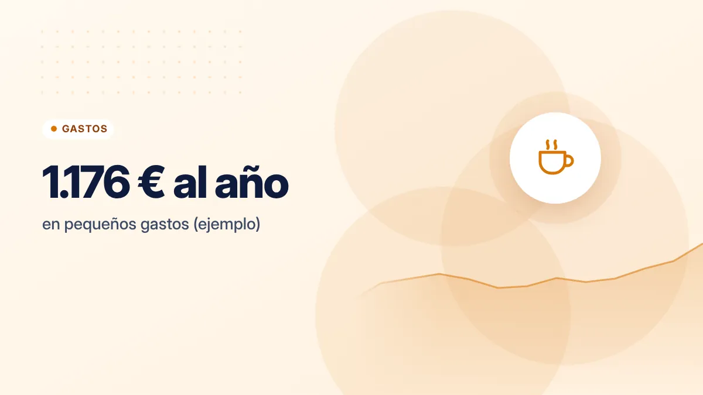
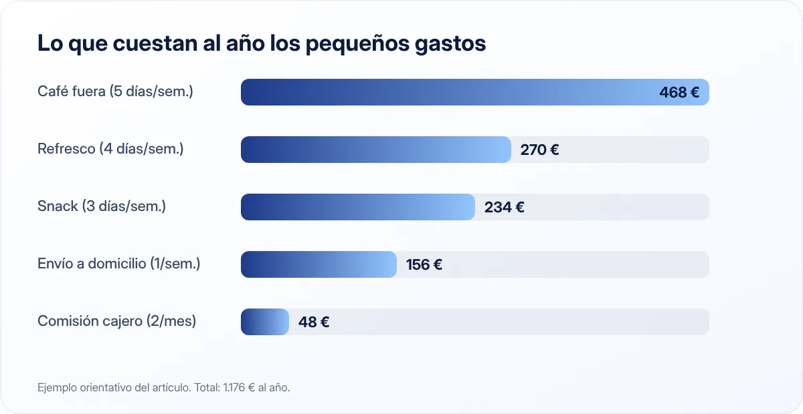

Gastos hormiga: qué son, cómo detectarlos y cuánto te cuestan al año
Un café aquí, un envío allá, una app de un euro… Ninguno parece importante, pero juntos pueden ser uno de tus mayores gastos.

Puntos clave
- Los gastos hormiga son pequeños, frecuentes y casi invisibles.
- Multiplica cada uno por 365 o por 52 para ver su coste anual real.
- No se trata de eliminarlos todos, sino de quedarte con los que de verdad disfrutas.
Qué son los gastos hormiga
Son gastos pequeños y frecuentes que hacemos casi en automático: el café de media mañana, el refresco de la máquina, la bollería, los gastos de envío, las comisiones del cajero, las compras dentro de apps o el taxi por pereza. Se llaman así porque, como las hormigas, uno solo no hace nada, pero muchos juntos se llevan una buena parte de tu sueldo.
Cuánto cuestan de verdad

La clave está en multiplicar:
| Gasto | Precio | Frecuencia | Al año |
|---|---|---|---|
| Café fuera de casa | 1,80 € | 5 días a la semana | 468 € |
| Bollería o snack | 1,50 € | 3 días a la semana | 234 € |
| Refresco de máquina | 1,30 € | 4 días a la semana | 270 € |
| Envío de comida a domicilio | 3,00 € de gastos de envío | 1 vez a la semana | 156 € |
| Comisión de cajero de otra red | 2,00 € | 2 veces al mes | 48 € |
| Total | 1.176 € |
Ejemplo orientativo: haz el cálculo con tus propios precios.
Más de 1.100 € al año en cosas que, probablemente, ni recuerdas haber comprado.
Cómo detectarlos
- Revisa los movimientos de un mes en la app del banco y marca todos los gastos de menos de 10 €.
- Agrúpalos por tipo: cafés, snacks, envíos, apps, transporte, comisiones.
- Multiplica el gasto mensual de cada grupo por 12.
- Pregúntate por cada grupo: ¿me aporta tanto como cuesta al año?
- Elige uno o dos para reducir este mes. No intentes cambiarlo todo a la vez.
Ideas para reducirlos sin amargarte
- Café: prepáralo en casa en un termo, o limita el café fuera a un par de días por semana como un pequeño lujo.
- Snacks: lleva fruta o frutos secos de casa.
- Envíos: agrupa pedidos o recoge en tienda.
- Comisiones de cajero: usa los cajeros de tu red o paga con tarjeta.
- Apps y microcompras: desactiva las compras dentro de aplicaciones y revisa tus suscripciones.
- Taxis y VTC: planifica con algo más de margen para ir en transporte público.
No se trata de vivir sin caprichos. Se trata de que cada pequeño gasto sea una decisión, no una costumbre.
Convierte el ahorro en algo visible
Cada vez que renuncies a un gasto hormiga, transfiere esa cantidad a tu cuenta de ahorro. Algunas apps bancarias permiten redondear cada compra al euro superior y apartar la diferencia automáticamente. Ver crecer ese dinero motiva mucho más que pensar en lo que "no gastas".
Si te cuesta controlar los pequeños pagos con tarjeta, prueba unos meses el método de los sobres para tus gastos variables.
¿Qué hacer con lo que ahorres?
Con 1.000 € al año puedes completar buena parte de un fondo de emergencia, liquidar una deuda pequeña o empezar a ahorrar para un objetivo concreto. Puesto en perspectiva con el interés compuesto, un pequeño cambio de hábito hoy puede convertirse en una cantidad importante dentro de unos años.
Fuentes consultadas
Este artículo es informativo y no constituye asesoramiento financiero, fiscal ni jurídico personalizado. Las cifras son orientativas y pueden cambiar; consulta las fuentes oficiales y, si lo necesitas, a un profesional. Cómo elaboramos nuestras guías.